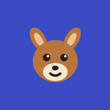

Language Courses
Short daily lessons in a skill tree. Progress syncs between devices through GitHub.

Kancil Indonesianbahasa Indonesia
Zaga Burmeseမြန်မာစကား
To sync, open a course, go to Words, and connect under Settings. Add each course to your home screen from Safari's Share menu to use it like an app.